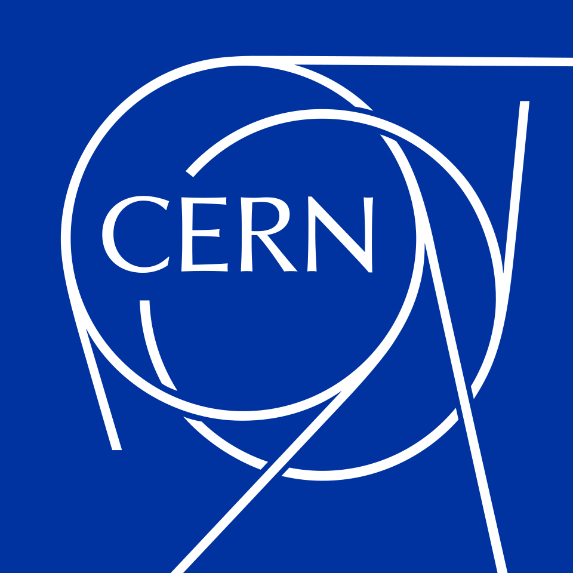

CMS TWiki Assistant
AI-Powered Semantic Search for CMS Experiment Documentation at CERN
🔒 Built on CMS-internal data · Not publicly available
Meet the Team
🇸🇦
Buruj Mamdouh Kiahamy
Developer
🇧🇭
Taha Almohamed
Developer
🇴🇲
Abrar Saif Rashid Alsaidi
Developer
🇵🇰
Mehnaz Hafeez
Supervisor · CERN